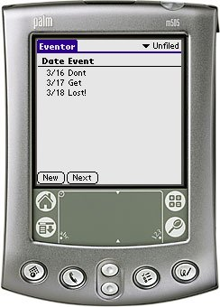

Eventor is a Personal Event Reminder manager. Eventor assists you in remembering all your important personal forthcoming events, such as birthdays, anniversaries etc. etc.
Eventor runs on any Palm OS 3.0 or better device and is free to use.
You may support this project by donating any amount to my Pay Pal account but this is not required. A "Thank You" mail will be equally well received!
Download
Changelog for Eventor
v2r2 (2003-06-03) Added backup bit to databases. Databases will now be backed up to your desktop PC during HotSync if you don't have Eventor Conduit installed. v2r1 (2003-05-10) Changed database format. If you use the Eventor Conduit you should upgrade to the latest Conduit as well. Added "age" to events (Suggested by Poul & Linda Stanley). Added Edit Menu on the edit screen. Palm Print supported - you can now get a printout of all events on your printer. v1r7 (2003-04-24) Cosmetics: the text on the main table is shown in normal font on OS3.x devices as well. v1r6 (2003-04-17) Fixed a bug in the notifications screen - if you got two forthcoming events both will be shown (Reported by Stefano Ferrazzi). Code cleanup. v1r5 (2003-04-07) Fixed a bug which made the year on the notifications screen come out wrong. v1r4 (2003-04-02) Rearranged some of the notification code - it should now work on OS 4.0. Added sound to the planned Event List (not when powering on you pda!) (Suggested by Stefano Ferrazzi). v1r3 (2003-03-27) Only one Event List is shown when you turn on the handheld :o) The conduit has been separated from the Application (no changes). v1r2 (2003-03-25) Added the ability to launch the Event List every time you turn on your handheld. (Suggested by Stefano Ferrazzi). There is no changes to the conduit. v1r1 (2003-03-16) Initial release of both Eventor and the Conduit.
Changelog for the Eventor Conduit
v2r2 (2003-05-14) The output from the Eventor Conduit is now more readable. This is the first step towards a desktop companion :o) v2r1 (2003-05-10) Updated Conduit to support Eventor-2r1 and better. v1r1 (2003-03-27) Initial release of the new version of the Eventor Conduit.